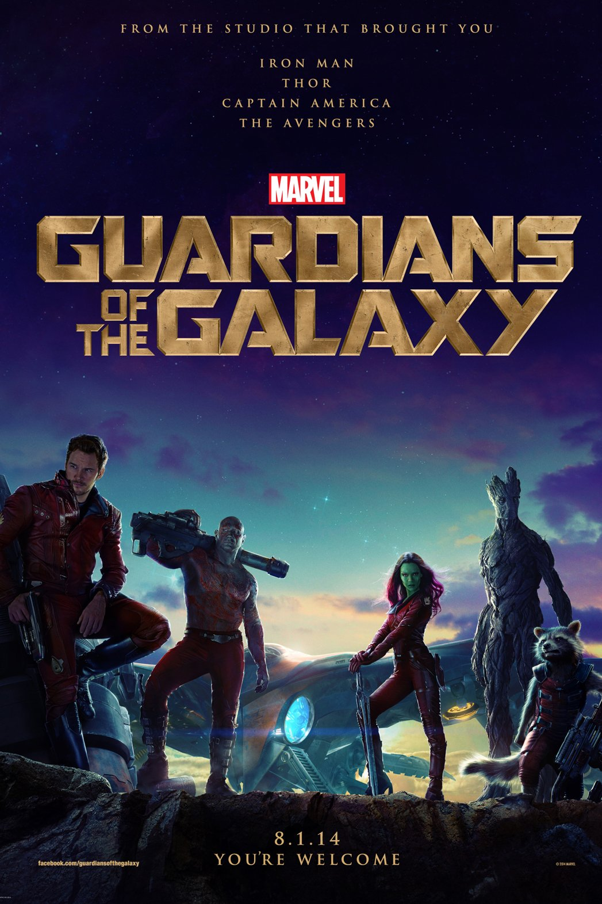
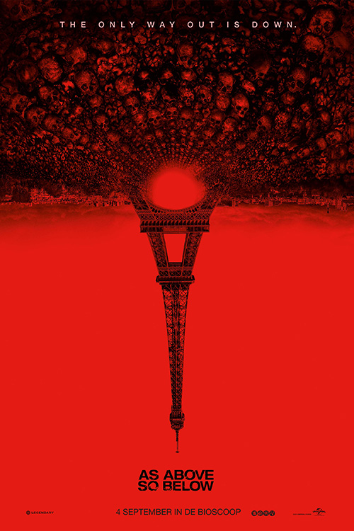
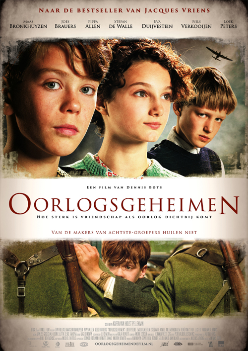

Home
FILM OVERZICHT
ACTUELE FILMS
KLASSIEKE FILMS
VERWACHT
Bioscoopagenda
Informatie
Maandag
Dinsdag
Woesndag
Donderdag
Vrijdag
Zaterdag
Zondag

Guardians Of The Galaxy
Marvel, de studio die ons de internationale filmhits Iron Man, Captain America en The Avengers bracht, komt met een nieuw team: Guardians of the Galaxy.
19:00
Zaal 1
15:00
Zaal 1
17:00
Zaal 2
Hercules
In de spectaculaire actiefilm The Legend of Hercules 3D, die zich 1200 voor Christus in het oude Griekenland afspeelt, speelt Kellan Lutz de moedige Hercules.
19:00
Zaal 2
Shawshank Redemption
Het is 1947. Andy Dufresne houdt vol dat hij onschuldig is aan de moord op zijn vrouw en diens minnaar, maar krijgt wel twee maal levenslang in de strenge gevangenis Shawshank.
20:00
Zaal 3

As Above So Below
Onder de straten van Parijs liggen de catacomben, de eeuwige rustplaats van ontelbare zielen...
23:00
Zaal 2
01:00
Zaal 1
Wintersleep
Aydin is een gepensioneerde acteur die samen met zijn vrouw Nihal en zijn zus Necla een klein hotel uitbaat in centraal Anatolië.
01:00
Zaal 2
The Boxtrolls
Onder de straten van het dorp leven de Boxtrolls, vieze monsters die 's nachts uit het riool komen, en de kinderen en kazen van de bewoners stelen. Althans dat is de legende waarin ze geloven.
15:00
Zaal 2
23:00
Zaal 3
The Maze Runner
The Maze Runner, gebaseerd op de gelijknamige bestseller van James Dashner, speelt zich af in een apocalyptische wereld
21:00
Zaal 1
Lucy
Wanneer de studente Lucy per ongeluk betrokken raakt bij een gevaarlijke deal, ontdekt ze dat er geen grenzen zijn aan haar intellectuele ontwikkeling.
09:00
Zaal 3
21:00
Zaal 2
Ninja Turtles
In de spectaculaire 3D actiefilm Ninja Turtles heeft Shredder iedereen in New York samen met zijn kwaadaardige Foot Clan in zijn macht .
09:00
Zaal 1
Pijnstillers
Casper zit in zijn vrije tijd het liefst achter de piano. Hij is dan ook heel blij als hij wordt gekozen om pianist te worden in een jeugdorkest
11:00
Zaal 1
Fellowship Of The Ring
Een magische ring met bovenaardse krachten komt in handen van de jonge hobbit Frodo. Hij moet het opnemen tegen Sauron, heerser van de duisternis.
11:00
Zaal 3
The Two Towers
Frodo en Sam trekken verder in de richting van Mordor om hun taak te volbrengen. Hierbij krijgen ze hulp uit onverwachte hoek.
14:00
Zaal 3
Damned
Peter Facinelli, Sophia Myles en Nathalia Ramos spelen de hoofdrollen in deze sfeervolle bovennatuurlijke thriller.
13:00
Zaal 2
The November Man
Pierce Brosnan is terug als bikkelharde geheim agent in het verraderlijke Rusland, waar de enige die hij kan vertrouwen een advocate is met een schimmig verleden.
13:00
Zaal 1
23:00
Zaal 1
Fight Club
David Finchers controversiële thriller met Edward Norton en Brad Pitt als een kantoorklerk en een anarchistische zeepmaker die een vechtclub oprichten.
17:00
Zaal 1
Into The Storm
In een dag wordt het stadje Silverton verwoest door de ongekende kracht van een serie tornado's. De bevolking is overgeleverd aan de cyclonen.
09:00
Zaal 2

Oorlogsgeheimen
De Zuid-Limburgse jongens Tuur en Lambert zijn beste vrienden tijdens de Tweede Wereldoorlog. Tuurs vader zit bij het verzet, maar Lamberts vader is een NSB'er.
11:00
Zaal 2
The Return Of The King
The Return of the King is een grimmige film, vol oorlog en lijden. Tijdens de belegering van Minas Tirith lijken de legers van Sauron onuitputtelijk.
17:00
Zaal 3